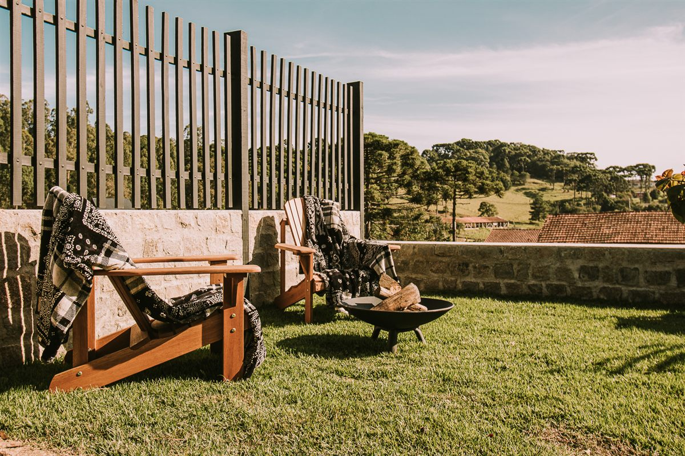
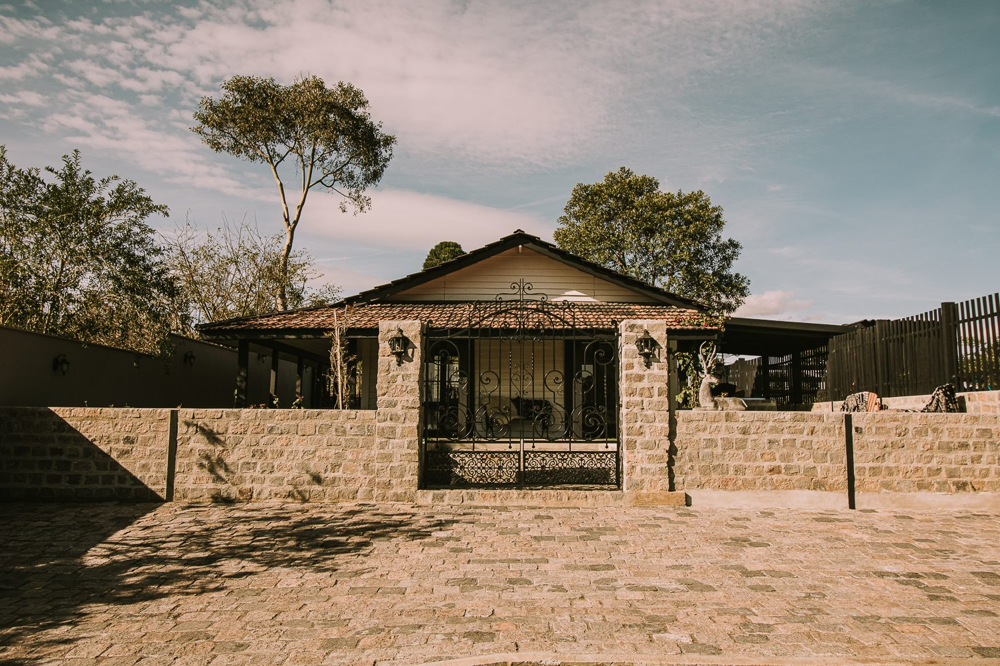
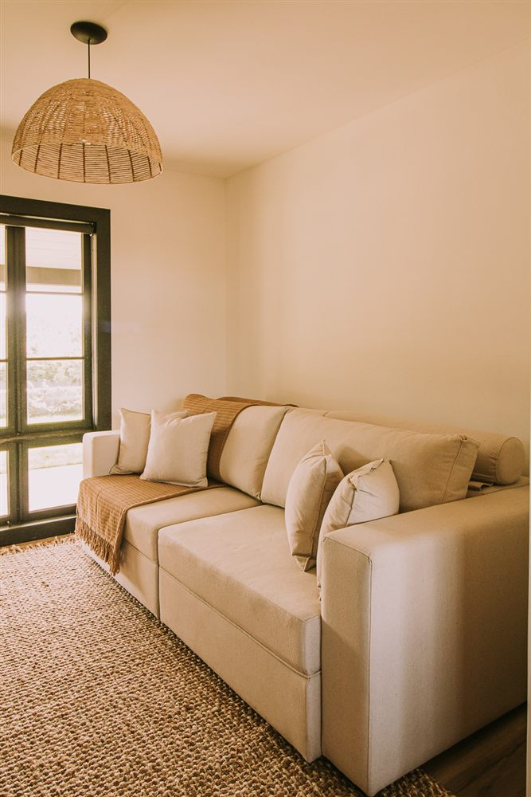

Galeria
Um olhar atento aos detalhes.
Registros da casa
Uma coleção para percorrer devagar.
Arquitetura, ambientes e detalhes reunidos em imagens. Escolha uma fotografia e deixe o olhar passear.



Galeria
Registros da casa
Arquitetura, ambientes e detalhes reunidos em imagens. Escolha uma fotografia e deixe o olhar passear.

